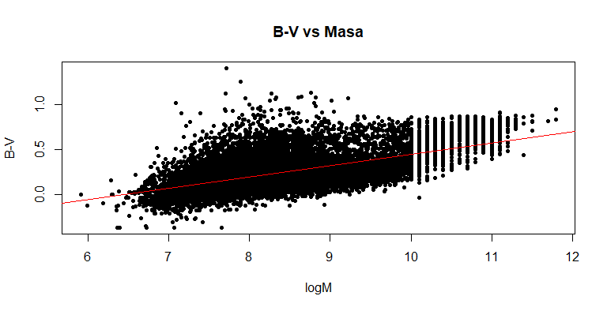
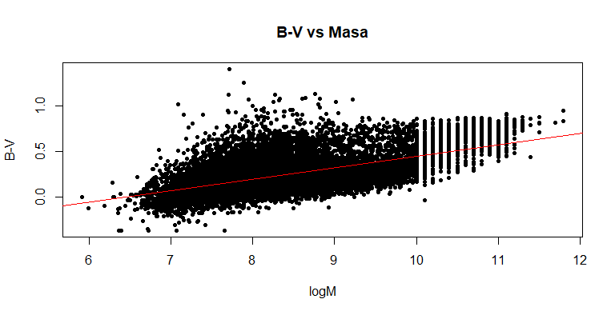

Podrás encontrar datos para caracterizar galaxias y saber más acerca de ellas.
Estos catálogos citados tratan con los siguientes campos cosmológicos. Cada uno de ellos ha aportado información relevante sobre diferentes estudios basados en catálogos fotométricos de múltiples longitudes de onda. A continuación, se muestran algunos de los artículos elaborados a partir de estos datos.
En esta sección se muestran algunos ejemplos de lo que se puede hacer a partir de los datos encontrados en estos catálogos. En concreto estas gráficas están hechas a partir del catálogo CANDELS bajo el campo cosmológico EGS como ya se mencionó. El código esta diponible aquí.
 


Una vez vistos los archivos se puede comprobar que estos continen un gran número de datos, para que sea más fácil trabajar con ellos se recomienda usar R o Python. En este caso se ha usado R, cuyo perfil estadístico ha sido de gran ayuda a la hora de elaborar gráficas como las propuestas.
Aquí puedes descargalos sin problema.
Esta página web ha sido creada como parte de un trabajo de fin de grado en Ciencias Físcas (UCM). El objetivo de esta es poder ayudar a futuros estudiantes que se encuentren realizando este estudio.
Autora: María del Carmen Fernández Calvo
Supervisor del TFG: Jesús Gallego Maestro
Imagen del encabezado: "El Gordo" ESA/Huble/NASA